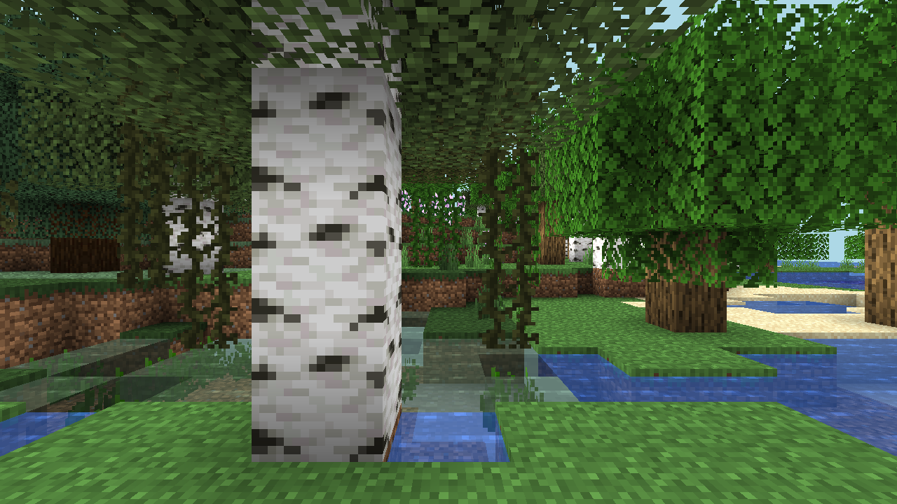
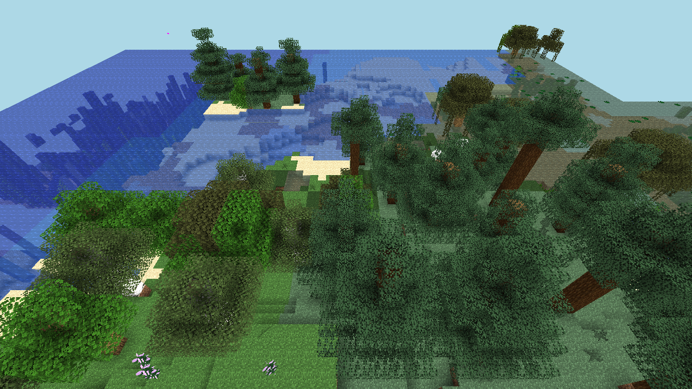

Stable Natural Seed Capture
Seed 9137002542963915989 captured from fresh 1.21.4 worlds so the server version matches prismarine-viewer support exactly.


Seed 9137002542963915989 captured from fresh 1.21.4 worlds so the server version matches prismarine-viewer support exactly.

